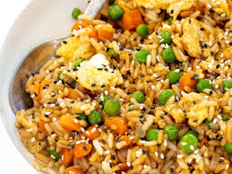

Fried Rice Recipe

Description
Enjoy this quick and easy recipe for fried rice, perfect for a causal weeknight dinner!
Ingredients
- 2/3 cup chopped baby carrots
- 1/2 cup frozen green peas
- 2 tablespoons of vegetable oil
- 1 clove minced garlic, or to taste (optional)
- 2 large eggs
- 3 cups of leftover and chilled white rice
- 1 tablespoon of soy sauce, or more to taste
- 2 teaspoons of sesame oil, or more to taste
Steps
- Assemble the ingredients.
- Place carrots in a small saucepan and cover with water. Bring to a low boil and cook for 3 to 5 minutes. Stir in peas, then immediately drain in a colander.
- Heat a wok over high heat. Pour in vegetable oil, then stir in carrots, peas, and garlic; cook for about 30 seconds. Add eggs; stir quickly to scramble with vegetables.
- Stir in cooked rice. Add soy sauce and toss rice to coat. Drizzle with sesame oil and toss again.
- Serve hot and enjoy!